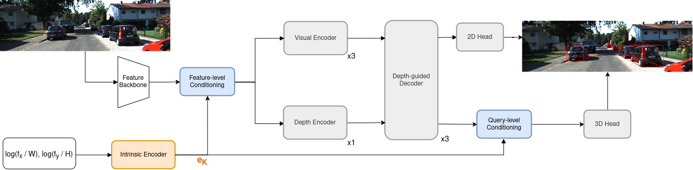
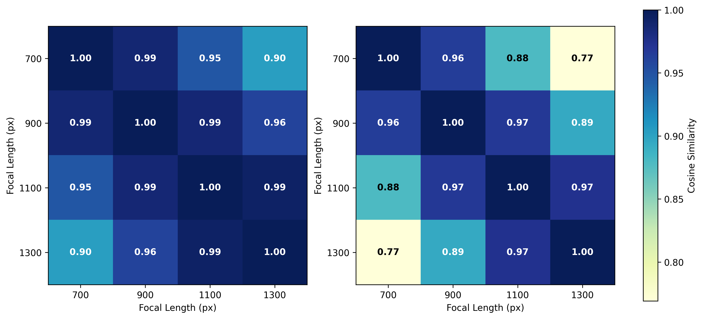
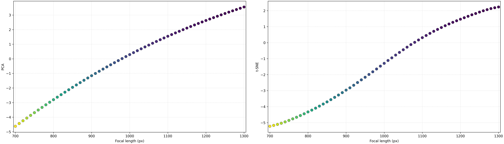

Monocular 3D object detection suffers severe performance degradation when deployed with camera intrinsics unseen during training. Existing solutions rely on large language models and vision-language encoders to map discrete focal anchors to semantic embeddings, forcing brittle interpolation for out-of-range focal lengths and burdening the detector with heavyweight auxiliary networks. We argue that camera intrinsics lie on a continuous geometric manifold that can be encoded directly, rendering semantic priors and discrete anchors unnecessary. We present MonoBEN, a unified intrinsic-aware detector that encodes continuous, logarithmically normalized focal parameters through a lightweight numeric encoder, and hierarchically injects the resulting geometric embedding at both the feature and query levels to explicitly condition the detection pipeline on projection geometry. On KITTI, MonoBEN achieves superior generalization to both interpolated and extrapolated unseen focal lengths compared to state-of-the-art intrinsic-aware methods, while matching competitive accuracy under standard fixed-camera evaluation. Notably, this robustness comes with fewer parameters and no additional computational overhead.
Keywords: monocular 3D object detection, camera intrinsics, cross-focal generalization.

MonoBEN is a unified intrinsic-aware detector built on the depth-guided transformer design of MonoDETR. Given an input image, a backbone extracts multi-scale visual features. In parallel, the camera focal lengths are normalized by the image dimensions, mapped into the logarithmic domain, and encoded into an intrinsic embedding eK by a lightweight two-layer MLP with GELU activations — trained end-to-end with no lookup table and no auxiliary loss. The log transform converts multiplicative focal scaling into an additive shift, restoring directional separation between focal lengths while keeping adjacent configurations smoothly connected. The embedding is injected hierarchically at two levels: feature-level, where eK is broadcast and added to the projected multi-scale features before the visual and depth encoders, and query-level, where eK is added to the decoded object queries before 3D box regression. During training a target focal length is drawn independently per sample from a continuous uniform distribution f′ ~ U(700, 1300) px; the image is warped to the target field of view and resized back, giving dense coverage of the interval. At inference, arbitrary intrinsics are handled on the fly — continuous, interpolation-free, and without any external language model.
AP3D (IoU ≥ 0.7) on KITTI Val at a seen anchor focal (700 px, hatched) versus an in-range interpolated focal (1200 px, solid), in the style of the teaser comparison — extended with MonoBEN on the right-hand side:
A note on terminology. The teaser this chart follows labels 1200 px “Unseen Intrinsic”. That label is not technically accurate for MonoBEN: the 1200 px focal lies strictly inside the f′ ~ U(700, 1300) px range sampled during training, between the 1100 px and 1300 px discrete anchors. We therefore label it Interpolated Intrinsic (1200px) — in-distribution but off-anchor, so anchor-table methods must interpolate to reach it while MonoBEN evaluates it continuously. Provenance: MonoBEN 24.20 is the KITTI Val Moderate AP3D at the native camera (the 700 px bucket; the exact-700 px sweep point is 23.64); 20.89 is the 1200 px sweep point. All other bars are the exact 700 px / 1200 px sweep values from the Generalization table below.
TABLE I: Results on different focal lengths using AP3D (IoU ≥ 0.7) on KITTI Val. Green denotes predefined focal anchors seen by MonoIA. Blue highlights the interpolated focal lengths where MonoBEN’s continuous representation successfully outperforms MonoIA’s discrete interpolation. Orange denotes out-of-range extrapolation (600, 650, 1350, 1400 px). † indicates results reproduced by us using the author-provided checkpoint and our implementation of their hybrid interpolation module (missing from the official source code).
| Method | Unseen Focals (px) | Seen Focals (700–1300 px) | Unseen Focals (px) | Avg | ||||||||||||||
|---|---|---|---|---|---|---|---|---|---|---|---|---|---|---|---|---|---|---|
| 600 | 650 | 700 | 750 | 800 | 850 | 900 | 950 | 1000 | 1050 | 1100 | 1150 | 1200 | 1250 | 1300 | 1350 | 1400 | ||
| MonoDETR | 14.09 | 16.67 | 19.15 | 18.55 | 17.89 | 16.21 | 18.90 | 16.54 | 15.12 | 15.06 | 16.76 | 13.66 | 12.30 | 11.88 | 14.22 | 10.08 | 7.51 | 14.98 |
| MonoDGP | 17.42 | 19.28 | 22.51 | 19.78 | 19.07 | 18.51 | 21.04 | 17.33 | 16.03 | 15.63 | 19.96 | 13.18 | 12.43 | 12.47 | 16.74 | 10.27 | 7.56 | 16.42 |
| MonoCoP | 18.18 | 21.70 | 23.88 | 22.49 | 21.44 | 20.20 | 23.30 | 18.61 | 17.69 | 16.43 | 22.59 | 14.57 | 13.46 | 13.11 | 18.50 | 12.73 | 11.11 | 18.23 |
| MonoIA (Paper) | 22.43 | 23.41 | 24.41 | 24.13 | 22.93 | 23.64 | 24.36 | 22.48 | 22.65 | 22.52 | 23.69 | 19.07 | 20.54 | 20.80 | 21.20 | 19.25 | 16.99 | 22.03 |
| MonoIA† (Reproduced) | 18.75 | 21.43 | 23.43 | 24.36 | 24.28 | 23.96 | 23.99 | 23.31 | 23.26 | 22.80 | 22.44 | 20.88 | 20.79 | 20.31 | 19.99 | 18.71 | 17.77 | 21.79 |
| MonoBEN | 21.01 | 22.16 | 23.64 | 24.10 | 23.72 | 24.83 | 23.59 | 23.59 | 23.15 | 22.92 | 22.19 | 21.15 | 20.89 | 20.57 | 19.85 | 18.79 | 17.42 | 21.97 |
Anchor Interpolated Extrapolated · Bold = best, underlined = second best.
In-range superiority. The reproduction exposes a gap between MonoIA’s reported figures and its actual checkpoint performance: on the four training anchors MonoIA† scores 23.43 / 23.99 / 22.44 / 19.99, below the claimed 24.41 / 24.36 / 23.69 / 21.20. Across the nine interpolated focals MonoBEN averages 22.77, ahead of paper-reported MonoIA (22.08, +0.69) and reproduced MonoIA† (22.66), peaking at 24.83 at 850 px. Extrapolation. Outside the training range MonoBEN leads: 21.01 at 600 px (+2.26 over MonoIA†) and 22.16 at 650 px (+0.73), averaging 19.85 over the four extrapolated focals vs. 19.16. Overall MonoBEN averages 21.97 over all 17 focals, matching reported MonoIA (22.03) and ahead of reproduced MonoIA† (21.79) — with no language–image pipeline or embedding interpolation.
TABLE II: KITTI Leaderboard (Test) and Val results at IoU3D ≥ 0.7. Methods utilizing extra data (LiDAR/Depth) are explicitly noted to ensure fair comparison.
| Method | Extra Data | KITTI Test | KITTI Val | ||||||||||
|---|---|---|---|---|---|---|---|---|---|---|---|---|---|
| AP3D ↑ | APBEV ↑ | AP3D ↑ | APBEV ↑ | ||||||||||
| Easy | Mod. | Hard | Easy | Mod. | Hard | Easy | Mod. | Hard | Easy | Mod. | Hard | ||
| OccupancyM3D | LiDAR | 25.55 | 17.02 | 14.79 | 35.38 | 24.18 | 21.37 | 26.87 | 19.96 | 17.15 | 35.72 | 26.60 | 23.68 |
| OPA-3D | Depth | 24.68 | 17.17 | 14.14 | 32.50 | 23.14 | 20.30 | 24.97 | 19.40 | 16.59 | 33.80 | 25.51 | 22.13 |
| MonoTAKD | LiDAR | 27.91 | 19.43 | 16.51 | 38.75 | 27.76 | 24.14 | 34.36 | 22.61 | 19.88 | 42.86 | 29.41 | 26.47 |
| MonoUNI | None | 24.75 | 16.73 | 13.49 | – | – | – | 24.51 | 17.18 | 14.01 | – | – | – |
| MonoDETR | None | 25.00 | 16.47 | 13.58 | 33.60 | 22.11 | 18.60 | 28.84 | 20.61 | 16.38 | 37.86 | 26.95 | 22.80 |
| MonoCD | None | 25.53 | 16.59 | 14.53 | 33.41 | 22.81 | 19.57 | 26.45 | 19.37 | 16.38 | 34.60 | 24.96 | 21.51 |
| MonoMAE | None | 25.60 | 18.84 | 16.78 | 34.15 | 24.93 | 21.76 | 30.29 | 20.90 | 17.61 | 40.26 | 27.08 | 23.14 |
| MonoDGP | None | 26.35 | 18.72 | 15.97 | 35.24 | 25.23 | 22.02 | 30.76 | 22.34 | 19.02 | 39.40 | 28.20 | 24.42 |
| MonoCoP | None | 27.54 | 19.11 | 16.33 | 36.77 | 25.57 | 22.62 | 32.06 | 23.98 | 20.64 | 42.20 | 31.29 | 27.58 |
| MonoIA | None | 29.52 | 20.29 | 17.93 | 37.55 | 26.59 | 23.26 | 33.61 | 24.40 | 20.80 | 44.69 | 32.17 | 27.93 |
| MonoBEN | None | 28.60 | 19.42 | 16.64 | 37.69 | 25.98 | 22.89 | 33.01 | 24.20 | 20.76 | 42.24 | 31.10 | 27.37 |
Bold = best, underlined = second best. Car category, IoU3D ≥ 0.7.
MonoBEN acts as a geometry-aware regularizer: exposure to continuously shifting intrinsics deters overfitting to KITTI-specific pixel-to-metric mappings. It improves on its base detector MonoCoP in 10 of 12 metrics, gaining +1.06 / +0.31 / +0.31 AP3D on Test Easy / Mod. / Hard and +0.27 to +0.92 APBEV across BEV categories. Versus MonoIA it matches validation accuracy (24.20 vs. 24.40 Moderate AP3D) while trailing 0.87–1.29 AP3D on Test — a deliberate trade of fixed-camera peak for continuous cross-focal generalization with no offline language dependency, at 42.37 M parameters and 71.77 GFLOPs (parity, no added overhead).

Pairwise cosine similarity of the learned intrinsic embeddings eK across focal lengths. Left: MLP trained on raw normalized inputs [fx/W, fy/H] (similarity 0.90 between 700 and 1300 px). Right: log-normalized input rlog (separation improves to 0.77) while preserving local smoothness.

Learned MonoBEN intrinsic embeddings sampled densely from 700 to 1300 px, via PCA (left) and t-SNE (right). Both reveal a strictly smooth, monotonic 1D manifold — qualitative confirmation that the numeric encoder preserves continuous geometric variation without the fragmented clusters of discrete semantic embeddings.